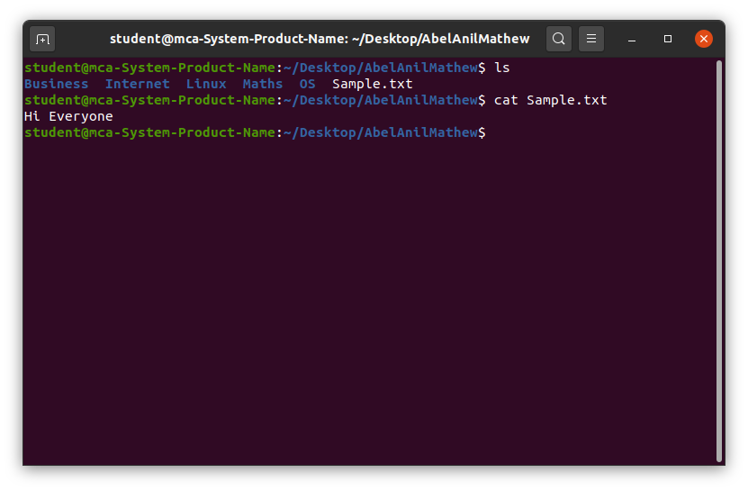

cat
The cat (concatenate) command is used to view, create, or combine files in Linux.
Purpose and Functionality
- Display the content of files.
- Concatenate and display multiple files.
- Create new files by redirecting output.
- View File Contents: Outputs the content of a file to the terminal.
- Combine Files: Joins multiple files and displays or saves the combined output.
- Create Files: Use with redirection (>) to create new files.
Key Features of the cat Command
